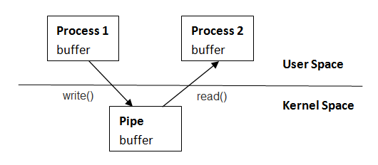

C++ Tutorial
MultiThreading/Parallel Programming IPC
All multithread/multicore programming need some communication between either the threads or the processes.
For instance, one thread might be signaling to another thread:
- by sending signals to indicate that an event has occurred
- by placing a message on a queue to exchange
- by passing data via pipes (named pipe: two way, unnamed pipe: one way communication)
- or network stack (sockets) can be used which usually involves a client-server model
- or the threads/processes can share memory. So, when one process changes the contents of the shared memory, all of the other processes can immediately see the changes.
In this chapter, we will be focused on those several ways of communications listed above mainly focused on Linux system.
Picture from "The Linux Programmming Interface".
Usually, different processes are not share their memories. By default, all processes have independent address space. So, sharing memory between processes is complicated. However, it is possible setting up multiple processes to share the same memory space, and we need to preconfigure regions of memory that can be shared between different processes.
We can create shared memory segment by using shm_open().
The shm_open() call establishes a connection between a shared memory object and a file descriptor. It creates an open file description that refers to the shared memory object and a file descriptor that refers to that open file description. The file descriptor is used by other functions to refer to that shared memory object.
#include <sys/mman.h> int shm_open(const char *name, int oflag, mode_t mode);
This function takes a name for the segment, a size, and a set of flags for the created shared memory.
The name argument points to a string naming a shared memory object. If successful, shm_open() returns a file descriptor for the shared memory object that is the lowest numbered file descriptor not currently open for that process. The name is a string with the first character with '/'.
The file status flags and file access modes of the open file description are according to the value of oflag. The oflag argument is the bitwise-inclusive OR of the following flags defined in the
- O_RDONLY will create a read-only segment.
- O_RDWR will create a segment that we can read and write from/to the memory segment.
- O_CREAT creates the segment if it does not exist or a handle to it if it does exist.
- O_EXCL will return an error if the segment already exists.
The last parameters are the file access permissions.
The memory segment will be created if it does not already exist. We can set the size of the memory segment using ftruncate() by passing the file descriptor of the segment with the size parameter:
#include <unistd.h> int ftruncate(int file_descriptor, off_t length);
With the a handle identifier returned from the shm_open(), we can map the shared memory region into the address space of our process by attaching the segment with a call to mmap():
#include <sys/mman.h> void *mmap(void *addr, size_t len, int prot, int flags, int fd, off_t offset);
The mmap() function establishes a mapping between the address space of the process for len bytes to the memory object represented by the file descriptor fd at offset off for len bytes.
- void *addr: The start address of the memory segment
- size_t len: The size of the memory segment in bytes
- int prot: The protection flag for the memory segment.
- PROT_EXEC - for pages that can be executed
- PROT_READ - for pages that can be read
- PROT_WRITE - for pages that can be written
- int flags: The sharing flag. MAP_SHARED to share the segment with other processes or MAP_PRIVATE to keep the segment private to the current process.
- int fd: The file descriptor of the shared memory.
- off_t offset: Offset into the shared memory segment.
The mmap() returns a pointer to the shared memory segment. After the process finished, it can unmap it from the address space of the process using munmap() call:
#include <sys/mman.h> int munmap(void *addr, size_t len)
The shared memory can be removed from the system using shm_unlink(). It causes the shared memory to be deleted when the last process detaches from it.
#include <sys/mman.h> int shm_unlink(const char *name)
The process of creating and deleting a shared memory should look like this:
id = Open shared memory(descriptor); memory = map shared memory(id); ... memory[10]; ... close shared memory
The following code is the implementation of the pseudo code above.
It shows how a process fork (for more on fork(), visit Linux Process and Signals) a child process and then use shared memory with the child process.
The child can share a memory segment as well as the mutex and variables contained in the segment. This is because the child process receives a copy of the memory of its parent process when the child process is forked by the parent process.
/* m.cpp */
#include <stdio.h>
#include <unistd.h>
#include <fcntl.h>
#include <sys/wait.h>
#include <sys/mman.h>
#include <pthread.h>
int main()
{
pthread_mutexattr_t attributes;
pthread_mutexattr_init(&attributes;);
pthread_mutexattr_setpshared(&attributes;, PTHREAD_PROCESS_SHARED);
int handle = shm_open("/shm", O_CREAT | O_RDWR, 0777);
ftruncate(handle, 2048*sizeof(int));
char *memory = (char *)mmap(0, 2048*sizeof(int), PROT_READ | PROT_WRITE,
MAP_SHARED, handle, 0);
// mutex share
pthread_mutex_t *mutex = (pthread_mutex_t*)memory;
pthread_mutex_init(mutex, &attributes;);
pthread_mutexattr_destroy(&attributes;);
// variable share
int *count = (int*)(memory + sizeof(pthread_mutex_t));
*count = 0;
printf("Initial count = %d\n", *count);
int value_returned_from_child = 0;
pid_t pid = fork();
if(pid == 0) {
pthread_mutex_lock(mutex);
(*count)++;
printf("Child process increased the count to %d\n", *count);
pthread_mutex_unlock(mutex);
value_returned_from_child = 99;
}
else {
int status;
// waiting for the child process to finish
waitpid(pid, &status;, 0);
value_returned_from_child = WEXITSTATUS(status);
printf("value_returned_from_child = %d\n", value_returned_from_child);
pthread_mutex_lock(mutex);
(*count)++;
printf("Parent process increased the count to %d\n", *count);
pthread_mutex_unlock(mutex);
}
munmap(memory, 2048*sizeof(int));
shm_unlink("/shm");
return value_returned_from_child;
}
The make file for the code:
m: m.o
g++ -o m m.o -Wall -lpthread -lrt
m.o: m.cpp
g++ -c m.cpp
clean:
rm -f *.o m
Note that we're linking with real-time extensions library using the compiler flag -lrt.
The output:
$ ./m Initial count = 0 Child process increased the count to 1 value_returned_from_child = 99 Parent process increased the count to 2
The child process acquires the mutex, and increments the shared variable, count. The child process releases the mutex before unmapping and unlinking the shared memory, and then it exits.
Once the child process has exited, the parent process continued. The parent process gets the return value of the child process via waitpid(). The macro WEXITSTATUS does the conversion of the exit status from waitpid() into the return value from the child process.
Like the child process, the parent process also acquires the mutex and increases the shared value, count before releasing the mutex. The value of the count becomes 2 after incremented twice by the child process and the parent process.
The last steps done by the parent process are destroying the mutex, unmapping and unlinking the shared memory region.
Until removed, a shred memory segment may remain on the system. Therefore, it is critical to make it sure that which process has the responsibility for the removal.
It is relatively easy to create a named semaphore and share it between child and parent processes.
#include <stdio.h>
#include <unistd.h>
#include <fcntl.h>
#include <semaphore.h>
int main()
{
int status;
sem_t *semaphore = sem_open("/sema", O_CREAT, 0777, 1);
pid_t pid = fork();
if(pid == 0) {
printf("child\n");
sem_post(semaphore);
sem_close(semaphore);
}
else {
sem_wait(semaphore);
printf("parent\n");
sem_close(semaphore);
sem_unlink("/sema");
}
return 0;
}
A message queue is a structure that can be shared between several processes. It's one of the methods that passing messages between processes. The messages can be placed in the queue and should be removed in the same order they were added.
To attach to a message queue, we need to call mq_open():
#include <mqueue.h> mqd_t mq_open(const char *name, int oflag, ...);
This will return a handle to the message queue. It takes a minimum of the name of the message queue and flags. The name of the message queue must start with '/' up to 13 characters. The flag should be one of the following: O_RDONLY, O_WRONLY, O_CREAT, or O_RDWR. If the flag O_CREAT is passed, the call to mq_open() requires two additional parameters: a mode setting that is used to set the access and a pointer to the attributes of the message.
The mq_close() takes the handle to the message queue. It closes the connection to the message queue.
#include <mqueue.h> int mq_close(mqd_t mqdes)
But the message queue will continue to exist, and to remove it from the system, we need to call mq_unlink() which takes the name of the message queue as its parameter.
#include <mqueue.h> int mq_unlink(const char *name);
Messages are added to the queue using mq_send() and received from the queue via mq_receive().
#include <mqueue.h> int mq_send(mqd_t mqdes, const char *msg_ptr, size_t msg_len, unsigned int msg_prio);
The parameters to mq_send() are the message queue, a pointer to a buffer containg the message, the size of the message, and a priority.
Th function mq_receive() takes the message queue, a pointer to a buffer where the message can be copied, the size of the buffer, and either a null pointer or a pointer to an unsigned int where the priority of the message will be written.
#include <mqueue.h> ssize_t mq_receive(mqd_t mqdes, char *msg_ptr, size_t msg_len, unsigned int *msg_prio);
In the following code, the child sends a message to its parent. Both the child and the parent open the message queue with the O_CREAT flag. It means the queue will be created if it does not already exist.
#include <stdio.h>
#include <stdlib.h>
#include <unistd.h>
#include <fcntl.h>
#include <string.h>
#include <sys/wait.h>
#include <mqueue.h>
#define PMODE 0655
int main()
{
int status;
struct mq_attr attr;
attr.mq_maxmsg = 10;
attr.mq_msgsize = 20;
pid_t pid = fork();
// child process - sending message
if(pid == 0) {
char message[20];
strncpy(message, "Hello Parent!", 13);
// write/create - attr needed because of O_CREAT
mqd_t mqfd = mq_open("/test1", O_WRONLY|O_CREAT, PMODE, &attr;);
if(mqfd == -1) {
perror("Child mq_open failure");
exit(0);
}
status = mq_send(mqfd, message, strlen(message)+1, 0);
if (status == -1) {
perror("mq_send failure\n");
}
else {
printf("Child is sending message: %s\n", message);
printf("mq_send successful\n");
}
mq_close(mqfd);
printf("Child process done\n");
}
// parent - receiving message
else {
// read only
mqd_t mqfd = mq_open("/test1", O_RDONLY|O_CREAT, PMODE, &attr;);
if(mqfd == -1) {
perror("Parent mq_open failure");
exit(0);
}
// Parent is waiting for the child process to finish
waitpid(pid, &status;, 0);
char buf[100];
status = mq_receive(mqfd, buf, 100, 0);
if (status == -1) {
perror("mq_receive failure\n");
}
else {
printf("mq_receive successful\n");
printf("Parent received message: %s\n", buf);
}
mq_close(mqfd);
mq_unlink("/test1");
printf("Parent process done\n");
}
return 0;
}
Here is the output:
$ ./messge_queue Child is sending message: Hello Parent! mq_send successful Child process done mq_receive successful Parent received message: Hello Parent! Parent process done
The mq_attr structure is defined in
struct mq_attr {
long mq_flags; /* Message queue description flags: 0 or
O_NONBLOCK [mq_getattr(), mq_setattr()] */
long mq_maxmsg; /* Maximum number of messages on queue
[mq_open(), mq_getattr()] */
long mq_msgsize; /* Maximum message size (in bytes)
[mq_open(), mq_getattr()] */
long mq_curmsgs; /* Number of messages currently in queue
[mq_getattr()] */
};
Here are some additional notes:
When we create a message queue with mq_open(), the following mq_attr fields determine the attributes of the queue:
- The mq_maxmsg field defines the limit on the number of messages that can be placed on the queue using mq_send(). This value must be greater than 0.
- The mq_msgsize field defines the upper limit on the size of each message that may be placed on the queue. This value must be greater than 0.
- The msg_len argument specifies the length of the message pointed to by msg_ptr. This value must be less than or equal to the mq_msgsize attribute of the queue; otherwise, mq_send() fails with the error EMSGSIZE. Zero-length messages are permitted.
Though message queues are similar to pipes, they differ in two important respects.
- Message boundaries are preserved, so that readers and writers communicate in units of messages, rather than via an undelimited byte stream as in the pipes.
- Each message includes an integer type field, and it is possible to select messages by type, rather than reading them in the order in which they were written as in the pipes.
An application using networking as means of communication has an advantage: it can communicate between processes on a single system or processes on different systems connected by a network. The only changes necessary it should make is the address where the packets are sent.
Communication via network usually involves a client-server model. To set up a server, it should first open a socket and then bind that socket to the address on the local host before start to listen for incoming connections. When it's connected, data can be read from it or written to it until the connection is closed.
Using sockets is different from other ways of communications we've looked into in this chapter. That's because the client that open the socket has different responsibilities than the server connected to the socket. So, as in the following samples, we have to look them as separate applications.
In the code, the client sends a message, and then the server echoes it back to the client.
Server side:
//server.c
#include <stdio.h>
#include <stdlib.h>
#include <string.h>
#include <unistd.h>
#include <sys/types.h>
#include <sys/socket.h>
#include <netinet/in.h>
#include <pthread.h>
void error(const char *msg)
{
perror(msg);
exit(1);
}
void* echo(void* param)
{
char buf[1024];
int count;
pthread_detach(pthread_self());
int s = (int)param;
while( count = read(s, buf, 1023) > 0 ) {
printf("Server received %s\n", buf);
printf("Server sending it back\n");
write(s, buf, strlen(buf));
}
close(s);
}
int main(int argc, char *argv[])
{
int sockfd, newsockfd, portno = 9999;
// create a TCP/IP socket
sockfd = socket(AF_INET, SOCK_STREAM, 0);
if (sockfd < 0)
error("ERROR opening socket");
struct sockaddr_in serv_addr;
// clear address structure
bzero((char *) &serv;_addr, sizeof(serv_addr));
/* setup the host_addr structure for use in bind call */
// server byte order
serv_addr.sin_family = AF_INET;
// automatically be filled with current host's IP address
serv_addr.sin_addr.s_addr = INADDR_ANY;
// port number to bind to
serv_addr.sin_port = htons(portno);
// This bind() call will bind the socket to the current IP address on port
if (bind(sockfd, (struct sockaddr *) &serv;_addr, sizeof(serv_addr)) < 0) {
error("ERROR on binding");
}
// This listen() call tells the socket to listen to the incoming connections.
// The listen() function places all incoming connection into a backlog queue
// until accept() call accepts the connection.
// Here, we set the maximum size for the backlog queue to 5.
listen(sockfd,5);
while(newsockfd = accept(sockfd, 0, 0)) {
pthread_t t;
pthread_create(&t;, 0, echo, (void*)newsockfd);
}
return 0;
}
Client side:
// client.c
#include <stdio.h>
#include <stdlib.h>
#include <unistd.h>
#include <string.h>
#include <sys/types.h>
#include <sys/socket.h>
#include <netinet/in.h>
#include <netdb.h>
void error(const char *msg)
{
perror(msg);
exit(0);
}
int main(int argc, char *argv[])
{
int sockfd, portno = 9999;
struct sockaddr_in serv_addr;
sockfd = socket(AF_INET, SOCK_STREAM, 0);
if (sockfd < 0)
error("ERROR opening socket");
bzero(&serv;_addr, sizeof(serv_addr));
serv_addr.sin_family = AF_INET;
serv_addr.sin_addr.s_addr = inet_addr("127.0.0.1");
serv_addr.sin_port = htons(portno);
if (connect(sockfd, (struct sockaddr *) &serv;_addr, sizeof(serv_addr)) == 0)
{
printf("Client sending 'hello server!' to server\n");
char buf[1024];
strncpy(buf, "hello server!", 20);
write(sockfd, buf, strlen(buf));
int count = read(sockfd, buf, 1024);
printf("Got echo of %s from server\n", buf);
shutdown(sockfd, SHUT_RDWR);
}
else
error("ERROR connecting");
}
Output:
$ gcc -o server server.c -lpthread $ ./server Server received hello server! Server sending it back $ gcc -o client client.c -lpthread $ ./client Client sending 'hello server!' to server Got echo of hello server! from server
For more detail on processes, please visit Linux Processes and Signals.
A pipe is a connection between two processes. In essence, pipe provides a way of running different programs (commands) between two processes and communicate unidirectionally. There are two types of pipes: named or anonymous. We typically create a named pipe by calling pipe() before the fork() call. The pipe() creates two file descriptors: for reading from the pipe and for writing to the pipe.

The following example illustrates the use of anonymous pipe to communicate between a child and parent process.
#include <stdio.h>
#include <unistd.h>
int main()
{
int status, myPipe[2];
pipe(myPipe); // create the pipe
pid_t pid = fork();
/* child process */
if(pid == 0)
{
close(myPipe[0]); // close unused read end
write(myPipe[1], "a", 1);
printf("Child process sent 'a'\n");
close(myPipe[1]);
}
/* parent process */
else
{
char buffer[21];
close(myPipe[1]); // close unused write end
int pid_child = wait(&status;);
int length = read(myPipe[0], buffer, 20);
buffer[length] = '\0';
printf("Parent process received '%s'\n", buffer);
close(myPipe[0]);
}
return 0;
}
Output:
Child process sent 'a' Parent process received 'a'
The program creates file descriptors for the two pipes before forking a child process: one for the read end of the pipe (myPipe[0]) and one for the write end (myPipe[1]). Once written to the write end of a pipe, data is immediately available to be read from the read end. If the write end of a pipe is closed, then a process reading from the pipe will see end-of-file once it has read all remaining data in the pipe. Then, the read() returns 0.
To connect two processes, we follow the pipe() call with a call to fork().
Both of the parent and child can read from and write to the pipe, however, this is not usual (race situation). Therefore, immediately after the fork(), one process closes its descriptor for the write end of the pipe, and the other closes its descriptor for the read end. So, in the example, the parent closes the descriptor, myPipe[1] and then waits to receive data from myPipe[0] by calling system call wait(). The child process closes the descriptor myPipe[0] and then send a character to myPipe[1] for parent process to read. The child process then closes the copy of the write file descriptor. The parent process prints the character sent by the child before closing the pipe.
The parent process call mknod() to create the pipe and then forks. Both of the child and parent processes open the pipe. Child writes to it and parent reads from it.
The child writes into the pipe, closes the file descriptor, unlinks the pipe, and the parent process reads from the pipe, close, and unlinks it.
#include <stdio.h>
#include <unistd.h>
#include <sys/stat.h>
#include <fcntl.h>
int main()
{
int status;
mknod("/tmp/pipefile", S_IFIFO | S_IRUSR | S_IWUSR, 0);
pid_t pid = fork();
/* child process */
if(pid == 0)
{
int myPipe = open("/tmp/pipefile", O_WRONLY);
write(myPipe, "a", 1);
printf("Child process sent 'a'\n");
close(myPipe);
}
/* parent process */
else
{
int myPipe = open("/tmp/pipefile", O_RDONLY);
char buffer[21];
int pid_child = wait(&status;);
int length = read(myPipe, buffer, 20);
buffer[length] = '\0';
printf("Parent process received '%s'\n", buffer);
close(myPipe);
}
unlink("/tmp/pipefile");
return 0;
}
We can create a named pipe by using a call to mknod(). It takes the path to the file that is to be used as the identifier for the pipe. The second argument is a mode. S_IFIFO is used for a named pipe. The other ones in the second argument is the access permission for the file.
Both of the child and parent processes can call open() to open the file and handle the returned pipe handler in the same way as we did in the previous example.
Once everything is done regarding the named pipe, we can call unlink() to remove it.
Please visit Signals - Linux
Ph.D. / Golden Gate Ave, San Francisco / Seoul National Univ / Carnegie Mellon / UC Berkeley / DevOps / Deep Learning / Visualization